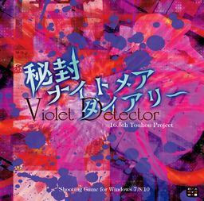

- Welcome to Touhou Wiki!
- Please register to edit. For assistance, check in with our Discord server or IRC channel.
Violet Detector

|
Attention: This article is a stub and it needs expanding with more information related to the article's topic. If you can add to it in any way, please do so. |
Violet Detector | |
|---|---|
|
 | |
| Developer | |
| Publisher | |
| Released |
August 10, 2018 (Comiket 94) |
| Genre |
Vertical Danmaku Photography Shooting Game |
| Gameplay |
Single-player Story Mode |
Gameplay[edit]
Violet Detector, like its predecessors Shoot the Bullet, Double Spoiler and Impossible Spell Card, is a collection of many individual danmaku patterns that the player can choose from at their leisure. In addition to the usual mechanic of taking photographs that clear enemy bullets, Sumireko has several psychic superpowers at her disposal, such as teleportation. The game features all of the characters who debuted in Legacy of Lunatic Kingdom and Hidden Star in Four Seasons, plus Reimu, Marisa, and most of the final and EX bosses from previous games.
Name and Concept[edit]
Story[edit]
Sumireko Usami, psychic teenager and frequent visitor to Gensokyo, finds herself trapped in a nightmare wherein Gensokyo's residents are relentlessly attacking her with danmaku. A frustrated Sumireko decides to make the best of the situation by photographing the danmaku patterns to share on social media, and after doing so, finds that she's been freed from the dream. Three long weeks of danmaku nightmares follow...
Music[edit]
The soundtrack of Violet Detector features a total of eight tracks. Four of these are taken from previous games or music albums, and are all used during dialogue within a given scene. The other themes, aside from the title screen, play during any other scene.
Press[edit]
ZUN announced the game on his blog and Twitter account on July 19, 2018. The announcement included some info about the game and its release date, and featured some screenshots showing the main screen and some of the characters.
English patch[edit]
Touhou Community Reliant Automatic Patcher / THCRAP
- Community translations from the Touhou Patch Center wiki.
- Select lang_en during patching.
- Video walkthrough
- Also available as a pre-packaged standalone (not recommended).
These patches are a community translation based on Touhou Wiki and the English Touhou Patch Center Portal.
Visit the thpatch game page to find the specific patch contents for Violet Detector.
External Links[edit]
Violet Detector official announcement on ZUN's blog
References[edit]